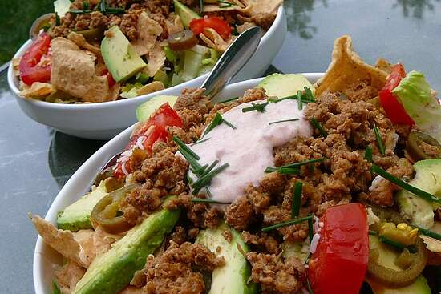

Quick Turkey Taco Salad

Description
This is a great, fast recipe for those nights that you have little time but want a balanced meal.
Add beans or olives, if that is what you like. We can't find taco salad shells here,
so if you have them where you are, try those. If you don't like raw onions, cook the onions
with the ground turkey.
Ingredients
- ½ pound ground turkey
- 1 (1 ounce) packet taco seasoning mix
- ½ cup chopped green bell pepper
- 4 cups mixed salad greens and fresh herbs
- 2 cups tortilla chips
- ½ cup shredded Mexican cheese blend
- ⅓ cup chopped onion
- ½ cup fresh salsa
- 1 tablespoon sour cream (Optional)
Directions
- Cook turkey in a skillet over medium heat until completely browned, 5 to 7 minutes;
season with taco seasoning mix. Add green bell pepper; cook and stir until pepper is tender,
about 5 minutes.
- Arrange salad greens onto 2 plates. Top greens with tortilla chips, cheese, and onion.
Spoon turkey over the each salad.
Top with salsa and sour cream.
Nutrition Facts
Per Serving: 541 calories; protein 35.6g;
carbohydrates 39.7g; fat 27.3g; cholesterol 119.1mg; sodium 1887.6mg.